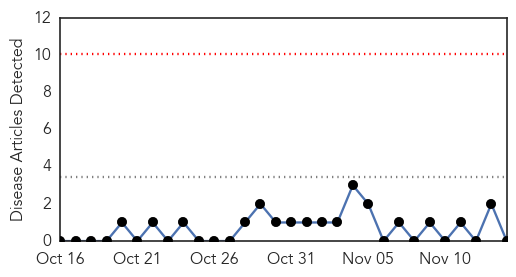

Hepatitis
30-Day Web Trend
0 alerts, 0 warnings
30-Day Twitter Trend
0 alerts, 0 warnings

Article Locations
Article Confidences

Top Articles:
- 0.976
- Steps to contain hepatitis A in Thrissur
- 0.973
- Hepatitis Advisory From Seneca County
- 0.806
- Hepatitis A Infection in Waterloo, Seneca County, New York McDonalds Employee
- 0.640
- One-step test for hepatitis C virus infection developed by UC Irvine Health researchers
- 0.502
- Study Sums Up Health Issues for New Refugee Children of US
Top Tweets:
-
No tweets found for Nov 14, 2015
West Nile Virus
30-Day Web Trend
0 alerts, 0 warnings

30-Day Twitter Trend
0 alerts, 0 warnings

Article Locations

Article Confidences

Top Articles:
-
No articles found for Nov 14, 2015
Top Tweets:
-
No tweets found for Nov 14, 2015